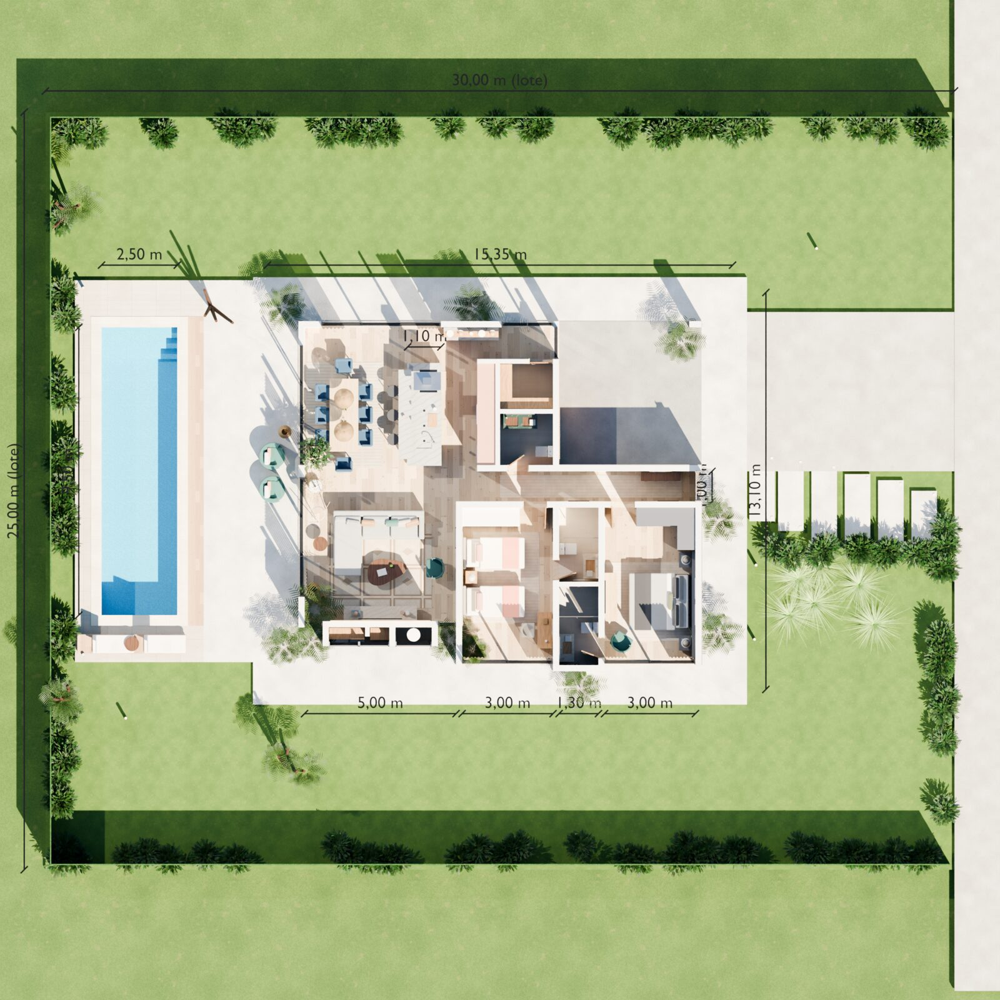

Um presente para começar
Esta é a casa.
Vamos entrar?
Reconstruímos o projeto em 3D, parede por parede, a partir das plantas, cortes e fachadas. Role a página e a visita acontece, da chegada até a beira da piscina.
De cima
Tirando a laje para ver a casa inteira
A cobertura é uma laje maciça plana, com cerca de um metro de beiral em todos os lados. Abra a vista superior no modo de exploração e remova a laje para enxergar a distribuição completa: social a oeste, garagem a nordeste, suítes ao sul.
Apresentação
As pranchas da casa, prontas para imprimir
Implantação com cotas, planta 3D com os nomes dos ambientes, planta mobiliada, os quatro alçados e dois cortes — todos gerados do mesmo modelo, com as medidas escritas no projeto — e as vistas de cada ambiente.
São 23 pranchas em A3, com uma página final que separa o que é do projeto, o que é hipótese e o que é proposta.

Galeria
Todos os ambientes
Imagens renderizadas a partir do mesmo modelo usado na visita 3D. Toque em uma imagem para ampliar.
Plantas e desenhos
O que o projeto diz, e como ficou no modelo
Vídeo
A visita em movimento
Animação renderizada no Blender com a câmera percorrendo a casa à altura dos olhos, pelo mesmo caminho da visita acima.
Arquivos
Para quem quiser abrir e continuar
Sobre a fidelidade
O que é do projeto e o que é proposta
Paredes, vãos, alturas, laje e piscina seguem o PDF do projeto, ancorados nos eixos estruturais cotados. Móveis, cores, tecidos, plantas e objetos são uma proposta de ambientação, posicionada sobre a planta mobiliada do próprio projeto. Onde o PDF não trazia a informação, registramos a hipótese.